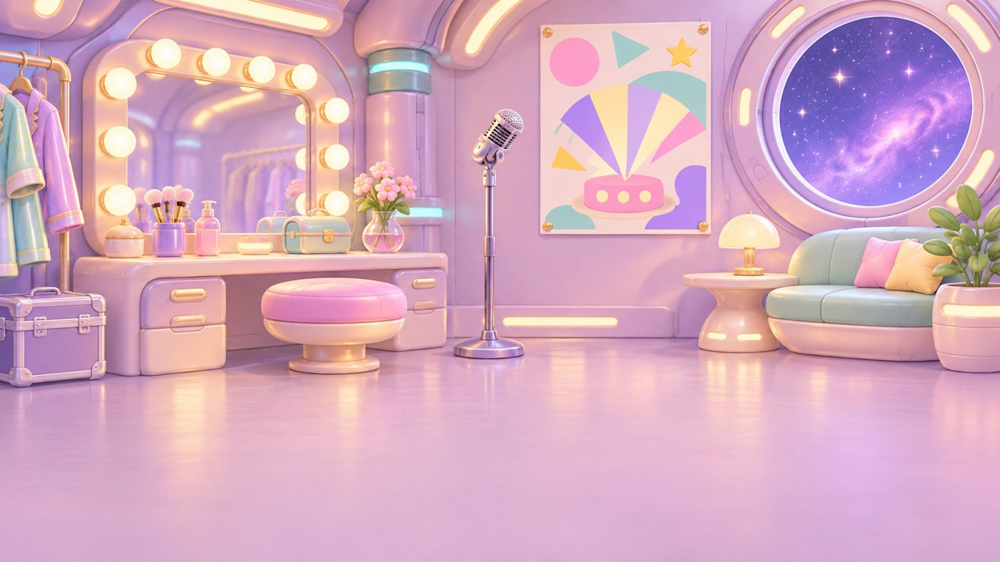
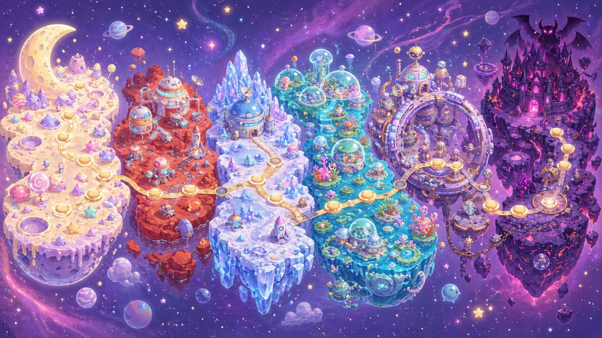
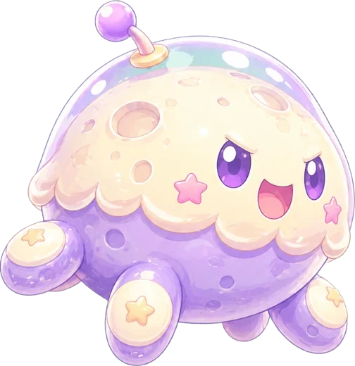
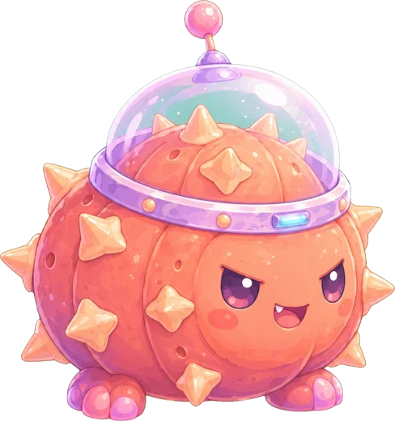
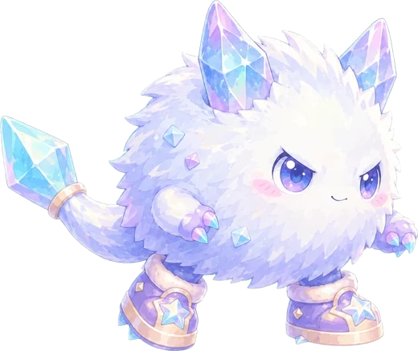
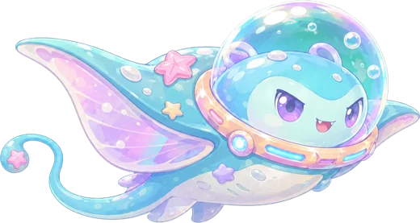
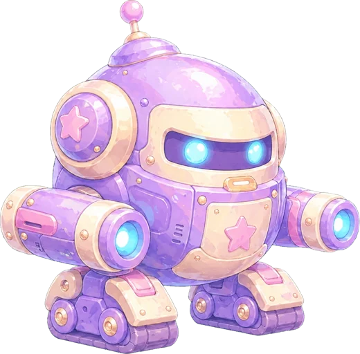
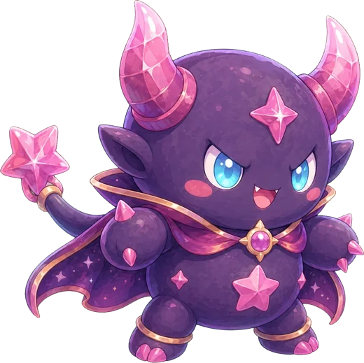

主人公
主人公PYONPY
ぴょんぴー
ムーニアンズのボケ担当。なぜか一人だけ笑いをうばわれなかった。柿ピーを食べれば百人力。光線銃を手に、6つの星をめぐる。

01 / STORY


お笑いコンビ「ムーニアンズ」は、宇宙最大の舞台『銀河お笑いフェス』を3日後にひかえていた。
そのとき、夜空がまっくろにそまる。魔王が、宇宙じゅうの“笑い”をうばってしまったのだ。笑いのエネルギー『ワライスター』は6つにくだかれ、6つの星へ。
らんぴょんは、ツッコミを思い出せなくなって動けない。なぜか平気だったぴょんぴーが、ヤナビスの案内で宇宙へ飛び出す。
「ほな、ちょっと宇宙すくってくるわ！」
02 / CHARACTERS
主人公ムーニアンズのボケ担当。なぜか一人だけ笑いをうばわれなかった。柿ピーを食べれば百人力。光線銃を手に、6つの星をめぐる。
 相方
相方ムーニアンズのツッコミ担当。笑いをうばわれて「なんでやねん」が出てこない。かけらがもどるたび、少しずつツッコミを思い出していく。
 道案内
道案内翻訳酸素カプセルの人工知能。翻訳だけでなく、道案内もしてくれる。ぴょんぴーといるうちに、関西弁がうつってきた。
 司令
司令三日月大使館のボス。緊急指令を出して、ぴょんぴーを送り出す。フェスの楽屋をおさえたまま、帰りを待っている。
03 / WORLDS & BOSSES
かけらを持ち去った、魔王の手下たち。
星ごとに、しかけも変わります。

WORLD 01月あめ平原
ふわふわ月あめ王国の王さま
「ふわふわ月あめは、ぜんぶぼくの王国だよ！」

WORLD 02火星ネオンコロニー
火星ネオンコロニーの司令官
「笑いなど、ネオンのこやしで十分だ！」

WORLD 03クリスタル氷星
クリスタル氷星の守り神
「きみも、キラキラに固めてあげる。」

WORLD 04星の海
星の海の女王
「泡にして、しずめてあげるわ。」

WORLD 05リングメカ工場
リングメカ工場の工場長
「ワライ、フヨウ。ハグルマニ マキコマレナ！」

FINAL WORLD魔王星
魔王星の大魔王
「笑いなど、宇宙から消えてしまえばよいのだ！」

04 / ENEMIES
行く手をはばむ、ちいさな敵たち。
上からふむと、ピヨります。

月あめ平原
「ぷるっ？ それ、ちょうだい！」
好奇心いっぱい。動くものを見ると追いかけてしまう。

火星ネオンコロニー
「止まれー！ ここは火星ドームだぞ！」
短気だけど、すぐ忘れる。司令官にあこがれている。

クリスタル氷星
「つるつるーっ！ つかまえてみな！」
すばしっこくて、いたずら好き。すべる氷の上が大得意。

星の海
「ぷくぷく〜、あそぼ〜！」
人なつっこい。あそんでいるつもりで、ついてくる。

リングメカ工場
「シンニュウシャ、ハッケン。ピピッ。」
まじめな働きもの。たまにフリーズする。

魔王星
「へへーん、魔王さまに言いつけるぞ！」
なまいきだけど、こわがり。魔王のネタ帳をこっそり読んでいる。
05 / HOW TO PLAY
| うごき | キーボード | タッチ ／ パッド |
|---|---|---|
| 移動 | ← → ／ A D | 十字キー |
| ジャンプ | Space ／ ↑ ／ W | A |
| ダッシュ | Shift | B |
| 光線銃 | X ／ J ／ Y | X ／ Y |
| 装備・合体 | Tab | SELECT |
| ポーズ | Enter | START |
06 / FIELD GUIDE
武器、アイテム、敵、ワールドのこと。
こまったときは、ここを見てな。
武器は「月🌙」と「星⭐」の2種類で、それぞれ Lv1〜Lv8。同じ武器を2つ合成すると、1つ上のレベルの武器になる。
ボスは6人、ふつうの敵は6しゅるい（1ワールドに1しゅるい）。絵をさわると、攻撃の姿にかわるで。